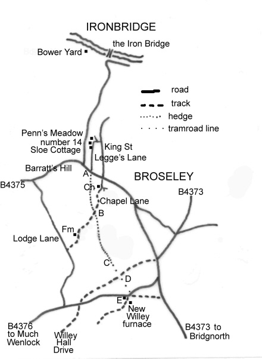

Exploring Telford
In the Footsteps of Bertram Baxter
by John Wooldridge
This page contents © John Wooldridge 2007
Benthall Railway, Shropshire

Exploring TelfordIn the Footsteps of Bertram Baxterby John WooldridgeThis page contents © John Wooldridge 2007Benthall Railway, Shropshire |
|
Benthall Railway (sometimes referred to as Benthall Rails) is believed to have been in existence by 1686. In the late 18th century the New Willey Company used it, as an alternative to the Tarbatch Dingle Railway (1), to carry iron to a Severn wharf. At that time the line probably ran from New Willey furnace north to near Benthall ferry, perhaps to Bower Yard, upstream from the Iron Bridge. (In 1777-80 the Iron Bridge replaced Benthall ferry as the main crossing of the Severn). The southern part of the line probably fell into disuse when New Willey Ironworks closed in the early 19th century, but the northern section probably took limestone and the products of Benthall's ironworks to the river until 1856 or later (2).
A single reference dated 1774: John Wilkinson for 10 tons of melting iron to the bottom of Benthall Railway. We must suppose this was another route belonging to the Willey Company and presumably starting at Dean Corner (New Willey Furnace) to the Severn (3).
This tramroad is not mentioned in Bertram Baxter's Stone Blocks and Iron Rails.
|
Bower Yard, on the River Severn, is the most likely location for the tramroad wharf. As the tramroad course southwards is uncertain it is best to start the walk in Broseley, a town which enjoys similar planning and conservation controls to Ironbridge and as a result is similarly atmospheric. Park at the bottom of Barratt's Hill A and walk northwards along Legge's (old name, Speeds) Lane. This is a rather narrow road and car parking is difficult. It is thought that this road followed the tramroad line. After 200 metres Legge's Lane kinks slightly to the right and may continue to follow the tramroad line. More likely however, is that the tramroad followed a line nearer the bottom of, what is at this point a dry valley. This would mean it would have passed through the property of Sloe Cottage, then through the back garden of number 14. Whichever route it took it would have passed through the property of Penn's Meadow, a large, new house situated where Legge's Lane turns sharply right and upwards. From this point northwards, the tramroad line is uncertain. Retrace your steps along Legge's Lane to its junction with Barratt's Hill A. This was the highest point reached by the tramroad. Across Barratt's Hill is a gateway into private land through which a hedge line can be seen heading southwards. The next access point is B, a third of a mile to the south, where a north/south hedge line, which marks the parish boundary is crossed by Chapel Lane. To get there, walk SE up Barratt's Hill; turn right into Chapel Lane; pass the 1741 Baptist Chapel on your right and continue downwards as the lane becomes unmade. (A public notice dated July 2006, announced the intention to modify the lane into a bridleway). The hedge line is beneath the second line of overhead power cables and it can be followed as it descends gently to the SSE along the shallow valley which, except at times of heavy rain is dry. The grass grows in tussocks and walking is not easy. The tramroad's gentle descent was maintained across a declivity by an 85 metres long embankment C with a hedge line bordering its western edge. In December 2006 when I first visited this locality, I spoke to a dog walker. By a remarkable coincidence he was able, not only to point out the embankment but he recalled that, before the Second World War, it had rails on it. Although this helped me to locate the embankment, if he is correct about its use in the 20th century, it raises questions that are unanswered. At the point where the embankment enters Willey Park Wood, it is 12 metres high. Crossing the fence into the wood both the embankment and the path peter out amongst planted conifers. Following the line to the SSE it passes a small, disused quarry then crosses the Willey Hall (carriage) drive. There is no trace in the trees to the south of the drive. Emerging from the trees D, when the sun is low one can just make out the line, gently descending across the field to the B 4376. Google Earth's satellite images show this feature particularly well. (Note: permission to walk through Willey Park wood and cross the Willey Hall drive should be sought from Willey Estate office 01952 883946.) The site of John Wilkinson's New Willey furnace is marked on the O.S. Explorer 242 map. A car can be parked beside the B 4376, Broseley to Much Wenlock road, just east of The Round House E, a recently restored octagonal tollhouse. Whether the tramway then crossed the road (probably about 6/8 feet above the present road level) to reach, then run along the causeway/dam at furnace-top level, or descended to the level of the furnace floor, is not known. |

Sketch map based on Ordnance Survey Explorer 242 | |